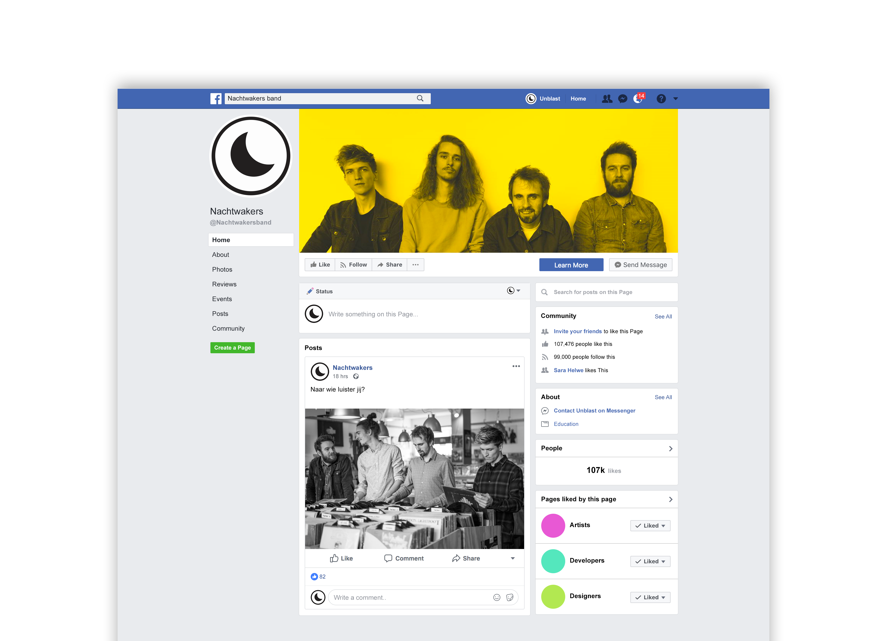

The Nachtwakers really wanted a social media campainge. I made some mock-ups for them. In our brandguide we had certain rules for them. They had to be serious on their posts and consistent. On the right there are is an instagram post and feed from instagram.
Beneath here there is a Facebook post for the Nachtwakers. These were all created in Photoshop.
